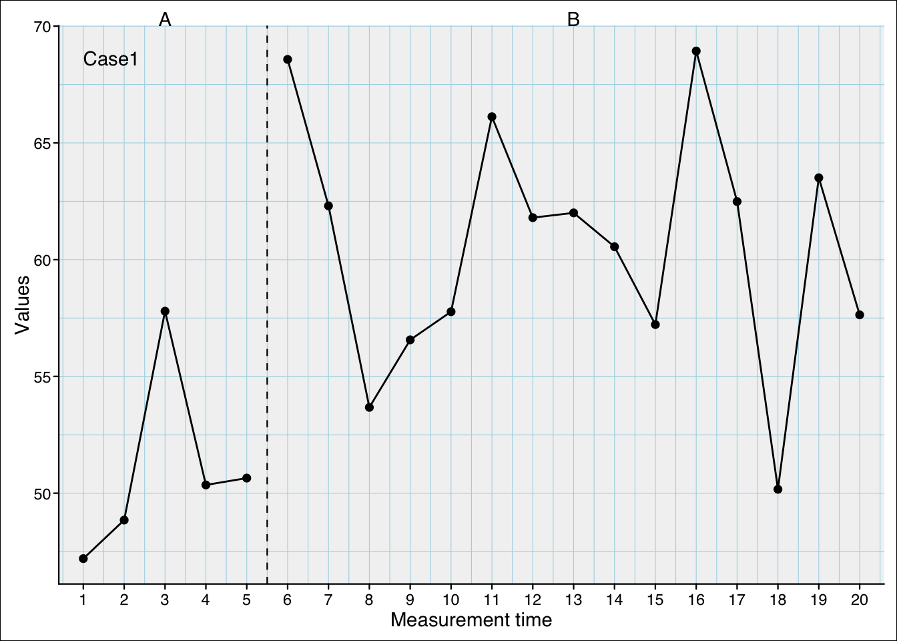

This feature is still in an experimental state. This means that the syntax structure, arguments, and defaults may change in future scan versions and may not be backward compatible.
Starting with version 0.63.0 scan included Bayesian regression analyses through the bplm() function (Bayesian Piecewise Linear Model).
In inferential statistics, a distinction is made between frequentist and Bayesian approaches. Frequentist statistics assess the probability of observing the data under the assumption that a null hypothesis (there is no effect or association) is true.
Bayesian statistics, on the other hand, begins with prior distributions that represent initial beliefs (priors) about the parameters of interest. These priors are then updated using observed data through Bayes’ theorem, which means that the initial beliefs about the parameters are adjusted in proportion to how well they explain the data, producing a posterior distribution that reflects both prior knowledge and new evidence. The Bayesian approach evaluates how well the data fit different parameter values by computing the likelihood of the data given these parameter estimates, rather than testing against a fixed null hypothesis.
The Bayesian approach is computationally intensive and often produces results that are practically similar to those of a frequentist analysis. However, it offers several advantages. In particular, when working with small samples, incorporating prior knowledge can improve parameter estimation. Additionally, Bayesian statistics does not require uniform distributional assumptions for all variables but allows each variable to have its own empirically derived distribution. Another advantage is its greater robustness against overspecified models, especially when too many predictors are included and exhibit high collinearity (intercorrelations) while the number of data points is limited.
These advantages make it worthwhile to use a Bayesian approach for single-case data.
The bplm() function comuputes a piecewise regression analysis. The syntax is quite similar to the plm() and hplm() functions. There you can find details about the general piecewise regression model, the interpretation of regression estimations, and the setting of contrast in models with more that two phases.
The bplm() works for datasets with one case or multiple cases.
Her is an example of a one-case dataset:
bplm(exampleAB$Johanna)
Bayesian Piecewise Linear Regression
Contrast model: W (level: first, slope: first)
Deviance Information Criterion: 127.0804
B-structure - Fixed effects (values ~ 1 + mt + phaseB + interB)
B lower 95% CI upper 95% CI sample size p
Intercept 54.226 45.648 62.242 1132.795 0.001
Trend (mt) 0.153 -3.239 3.346 1173.267 0.942
Level phase B (phaseB) 7.944 -5.084 19.554 1110.884 0.208
Slope phase B (interB) 1.451 -1.874 4.941 1145.789 0.390
R-Structure - Residuals
SD lower 95% CI upper 95% CI
5.355 3.558 7.228
Here is an example of a multi-case dataset:
bplm(exampleAB_50)
Bayesian Piecewise Linear Regression
Contrast model: W (level: first, slope: first)
50 Cases
Deviance Information Criterion: 8575.004
B-structure - Fixed effects (values ~ 1 + mt + phaseB + interB)
B lower 95% CI upper 95% CI sample size p
Intercept 48.477 45.317 51.223 1000.000 0.001
Trend (mt) 0.576 0.340 0.799 1218.837 0.001
Level phase B (phaseB) 14.042 12.707 15.275 1130.196 0.001
Slope phase B (interB) 0.906 0.679 1.140 1216.458 0.001
G-Structure - Random effects (~case)
Parameter SD lower 95% CI upper 95% CI
Intercept 10.245 8.027 11.99
R-Structure - Residuals
SD lower 95% CI upper 95% CI
5.295 5.098 5.495
13.1 Setting priors
The following example show the influence of priors on paramameter estimation. Firstly, we create a random case from previously defined parameters:
The starting value (intercept) is 50 (the standard deviation is 10). The level effect for Phase B is one standard deviation (that is, 10 points) and there is neither a slope nor a trend effect. Random noise is introduced with 20% measurment error (reliability is 0.8).
set.seed(123) #set random seed for replicability of the exampledes <-design(start_value =50, s =10,level =list(A =0, B =1), trend =list(0),slope =list(0),rtt =0.8)scdf <-random_scdf(des)scplot(scdf)

Here are the estimations from a Bayesian model without informative priors:
bplm(scdf)
Bayesian Piecewise Linear Regression
Contrast model: W (level: first, slope: first)
Deviance Information Criterion: 128.5297
B-structure - Fixed effects (values ~ 1 + mt + phaseB + interB)
B lower 95% CI upper 95% CI sample size p
Intercept 49.323 40.969 57.548 905.804 0.001
Trend (mt) 0.826 -2.195 4.368 1146.096 0.618
Level phase B (phaseB) 8.238 -4.645 19.994 1684.465 0.186
Slope phase B (interB) -0.984 -4.650 2.130 1109.566 0.532
R-Structure - Residuals
SD lower 95% CI upper 95% CI
5.599 3.457 7.517
Now we introduce our prior knowledge: an intercept of 50, a trend and slope effect of 0, and a level effect of 10. We also assume that our prior is quite uncertain (i.e., a weakly informative prior). mu sets the prior values for the four parameters in the order they appear in the regression model. V is a diagonal matrix of the variances of these estimates. The V matrix sets the strength of the prior. Here we set values of 100, which is one standard deviation (\(SD^2 = 10^2 = 100\)):